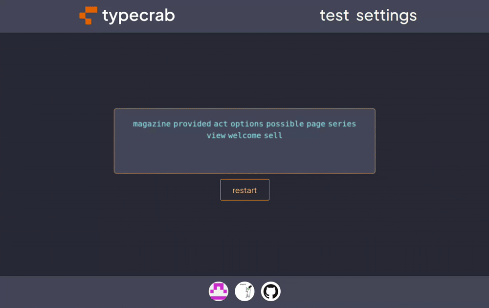

About

This project is a lightweight and customizable typing test, inspired by Monkeytype. It is implemented in Rust and features both a command-line interface (CLI) and a web-based user interface (Web UI). Users can practice typing in different modes, track performance statistics, and improve their typing speed.
What started as a relatively simple idea for a semester project in Programming in Rust language course, which had no specific requirements and gave us complete creative freedom, evolved into something much more interesting. The main motivation behind this project is that most existing typing tests often focus either on visual effects and gamification or, conversely, on a minimalistic interface without flexibility. This leads to some tools being too heavy and overloaded with unnecessary features, while others are limited in customization and use.
Our project is aimed at creating a fast, cross-platform typing test with minimalistic design, support for custom settings and allowing users to practice typing both while casually browsing the web and while coding in the terminal during breaks or context switches.
This brings us to the most interesting aspect of our project. The project follows a modular design, separating core logic from user interfaces. The core module contains all shared logic and exposes a core public API (Core API). Both the CLI and Web UI are fully independent components that interact only with the core, not with each other.
┌───────────┐ ┌───────────┐
│ cli │ │ web │
├───────────┴───────────────┐ ├───────────┴────────────────┐
│ │ │ │
│ ┌───────────┐ │ │ ┌────────────┐ │
│ │ │ │ │ │ │ │
│ │ CLI │ │ │ │ Web UI │ │
│ │ │ │ │ │ │ │
│ └─────┬─────┘ │ │ └──────┬─────┘ │
│ │ │ │ │ │
└─────────────┼─────────────┘ └──────────────┼─────────────┘
│ │
uses uses
│ │
│ ┌────────────┐ │
│ │ core │ │
│ ├────────────┴─────────────────┐ │
│ │ │ │
│ │ ┌──────────────┐ │ │
│ │ │ │ │ │
└────┼──────►│ Core API │◄──────┼────┘
│ │ │ │
│ └──────────────┘ │
│ │
└──────────────────────────────┘
While I mainly focused on the terminal interface, my colleague Artem Zaitsev primarily concentrated on the web interface. All shared logic resides in the core module. Interfaces only use it through a stable public API, preventing code duplication.
Both the CLI and Web UI include identical customization options. This ensures that users can seamlessly switch between interfaces without losing any functionality or needing to relearn the workflow.
After completing the project and gaining hands-on experience with Rust, we came to several conclusions: Rust's strong type system and strict compiler checks helped identify many issues at compile time, reducing runtime bugs. Additionally, Cargo - Rust's built-in package manager and build system - significantly made it easy and efficient to manage multiple crates and dependencies within the project.
However, some challenges were encountered. Certain third-party crates lacked sufficient documentation. Moreover, a recurring issue was version fragmentation across libraries: certain required features were available only in specific versions of a crate, while other needed functionality was missing in those same versions and present only in others.
We also faced a challenge where lack of planning at the beginning of the project led to the fact that some of the functions had to be rewritten and adapted for the browser environment later. But we successfully overcame this obstacle.
Speaking about the language itself, compared to other languages, working with Rust on a larger project has its pros and cons. The language provides strong security guarantees and high performance, but requires constant attention to concepts such as ownership, borrowing, and lifetime, especially when working with shared data. Once the code compiles, it tends to run reliably, which is a big advantage. At the same time, the ecosystem is impressive - the variety of crates available for almost any task is surprising and makes development much easier.
Overall, building a complete application in Rust is demanding but rewarding.